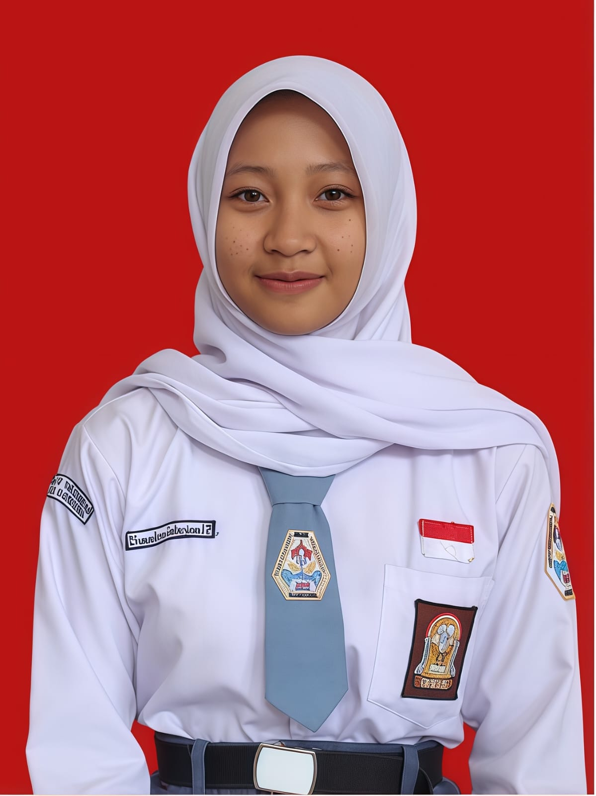

Shandra Sabrina
Tahun Lahir: 2007
📍 Alamat:
Bojongsoang Griya Bandung Asri 1
📞 Telepon:
085703209061
📸 Instagram:
mattchaltve0
🗣 Bahasa:
Indonesia
Hobby
Menonton
Pendidikan
2023 - 2026
SMA (Lulus 2026)
2019 - 2023
SMP (Lulus 2023)
Lulus 2019
SD
Keahlian
Menyanyi
Pengalaman Organisasi
SMA:
Aktif Berorganisasi (Lulus 2026)
SMP:
Aktif Berorganisasi (Lulus 2023)
SD:
Aktif Berorganisasi (Lulus 2019)
Sertifikat
2026
Lomba Lintas Alam (SMA)
2023
Sertifikat Pramuka (SMP)